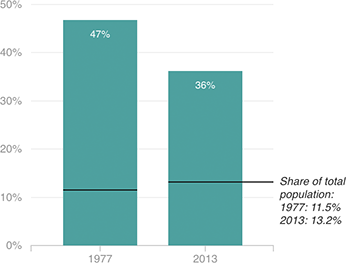

Share Of The Prison Population
As of 2013, 36 percent of inmates in U.S. state and federal prisons were African-American. That share has declined by 11 percentage points since 1977, but when compared to the overall African-American population, that number is relatively high. More than one out of seven people in the U.S. are African-American, yet more than one out of three inmates are African-American.
